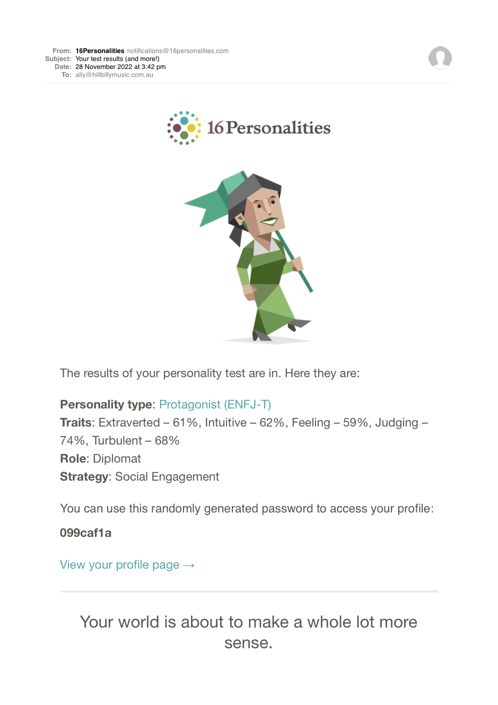
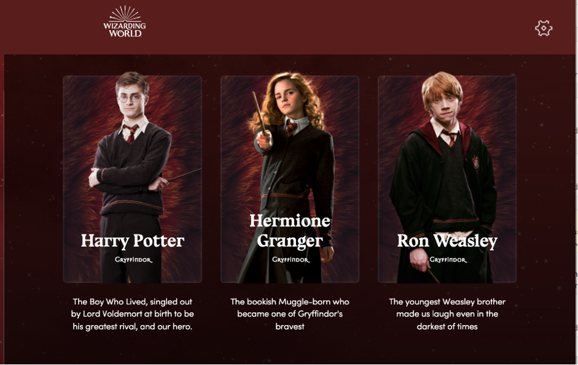

Student no. s3997602
Student email s3997602@student.rmit.edu.au
Australian of British extraction
Attended Bayswater secondary College
2002-2005 Diploma of viticulture and enology, Swinburne, Lilydale.

Currently employed as Musician, bar attendant, cleaner and gardener.
I’ve always been willing to give anything a go. I think my resume reflects that. I taught music some years ago from mid year for 6 months at a P-12 school when they were unable to get a real music teacher. Mostly to the secondary pupils but a few hours with a large group of the primary school age students. It was a lot of fun. Unfortunately a teacher did apply for the position at the end of the school year and therefore I did not continue in that role the following year. It was a job that I look back fondly at and would not hesitate to do again.
I play music fairly regularly either on my own, with my band, Ally And The Cats or as a back up musician and vocalist. With the new knowledge I am currently acquiring I will soon get a music website up and running. For now I just have a Facebook page.
https://www.facebook.com/allyandthecat/2 dogs, Cherry, Red Heeler x and Cally, Hunterway/Blue Heeler x Kelpie. "The best dogs ever but all dogs are"

Another great passion of mine, environment and the natural world. All things renewable, recyclable, reusable. Self sufficiency and sustainability. Personal involvement in Habitat 141 with Greening Australia which aims to create a corridor from the Murray River to the coast.
More information at-
https://www.habitat141.org.auAfter an initial interest in the space industry and NASA as a child and into secondary school, but the discovery that only USA citizens could work there back then put a stop to those dreams, I avoided computers for years, total luddite until around 12 years ago when I got my first computer. I still only used it for emails and social media, a bit of googling, finding lyrics or checking chords in songs I was covering. But more recently I had to do some reprogramming of a Victron fully Off Grid solar system which piqued my interest. Amazing technology and definitely something I would like to look at more thoroughly.
I have a friend in IT and I watched him working on a bulky old windows 7 machine I had inherited from my Mother. Wow! If only I could do that!!

[photo credit Richard Ayoade, The IT Crowd]
I saw an online advert for RMIT one evening and sent an enquiry form, the phone rang minutes later, it was a member of the RMT enrolment team whom I spoke with at length regarding career possibilities and what studies I would require to obtain employment in those areas. An introduction to IT was deemed the best place to start.
I had to realise the difference between ‘dream’ job and ‘ideal’, one that is actually obtainable. I would love to work in the environmental sector but most require far more experience and education than is realistically obtainable to me at this stage in my life. Another field I have a great interest in is reconciliation. But the ability to work remotely is what first attracted me to IT and would be a huge advantage.
The PDF attached is for my dream job. I feel it is totally out of reach but maybe in another life? Trust for Nature is one of the employers I will be sending my resume to on the off chance a suitable position opens up when I have completed my IT studies.
Link to the PDFThese are possibly more realistic employment opportunities and ideal as they are work from home.
Tetra Tech Coffey
Adelaide SA
Business/Systems Analysts (Information & Communication Technology)
Full time
As a Software Asset Analyst in our Tetra Tech IT Procurement and Asset Management team you will be involved in the management of software asset lifecycle including acquisition, compliance, maintenance renewals, contract consolidations, cost control and decommissioning.
It’s a dynamic global team environment where all hands are on deck to support and service the business. You’ll be responsible for:
Manage requests from end users and vendors for software, approve or provide alternatives based on IT guidelines and respond to inquiries about request status, changes, or cancellations
Contact vendors to schedule or expedite deliveries and to resolve shortages, missed/late deliveries, and other issues
Work with IT Management to ensure compliance with company procedures and best practices while maintaining compliance with vendor terms and conditions to reduce risk to the business and respond to external vendor audit requests and administer proactive software audit processes
Work productively in a team culture and other team members remotely Provide timely and meaningful inventory, deployment, usage, and availability information to business managers
Engage in the software support and maintenance renewals process and software inventory reporting to support negotiations in partnership with Vendor Management Document processes, identify process gaps and engage in process improvement Ability to present business cases to senior management for approval
For success in the role, you’ll need to demonstrate the following:You are good at organising and managing multiple priorities and/or projects by using appropriate methodologies and tools
You are a confident problem solver with the ability to encourage others in collaborative problem solving. You introduce new ideas and processes which improve performance and productivity
Negotiation experience and solid knowledge of purchasing methods and procedures is an asset
Excellent written and verbal communication skills
Advanced skills in Excel and presenting software licence data for review
IT Asset Management process and systems experience
Experience interpreting licensing terms and conditions
Experience within customer facing IT operations organisation
ITIL, ITAM and/or SAM training/certification a plus
Any of these employment opportunities would require a lot more study on my part. But one of the fabulous things about RMIT is the career hub. They will be able to advise me as to where I could or should be heading to moving on from my current studies. Maybe there is a job in IT out there waiting for me now?
I quite enjoyed doing these tests. They made me feel good about myself. I know I'm supposed to take the results with a grain of salt but if it makes one feel better about ones self then so be it!
The first is the Myers-Briggs personality test.
Link to the PDF  width=75%
width=75%
I wonder if I can squeeze my avatar in next to Barack?
Next, a learning styles quiz.
Link to the PDFAnd in the final test, The Sorting Hat decided which house at Hogwarts I should be in. This was lots of fun and I'm so happy [and relieved] with the results.
